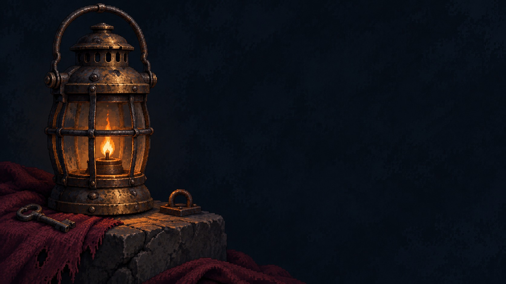
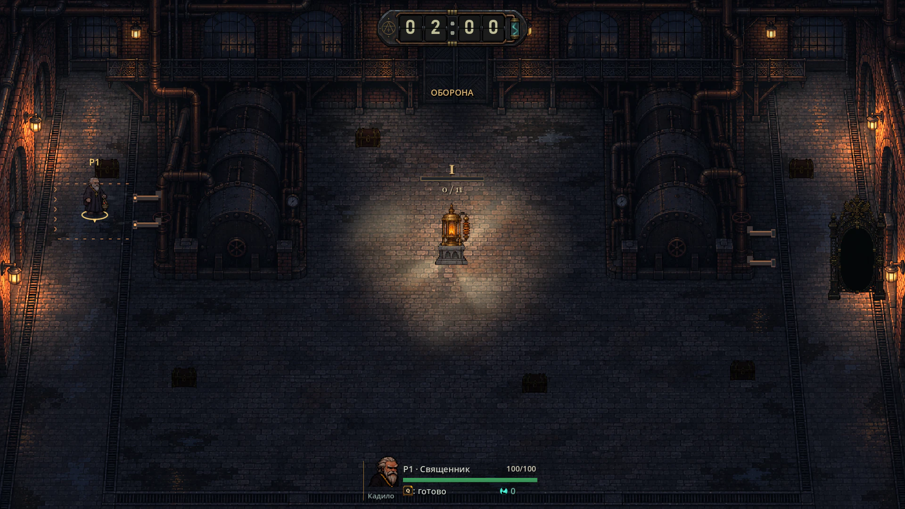
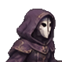
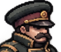
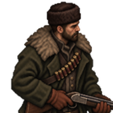

Игра в разработке Релиз в 2027
Светоч
Кооперативный экшен-роглайт с элементами хоррора
Соберите отряд и удержите свет в трамвайном депо или Городской котельной. Вернитесь в лагерь с добычей, чтобы открыть новые способности и Егеря.
Публичная сборка Preview 9 · Windows и Linux
Скриншоты
Из ночной вылазки
Кадры из вылазок и лагеря


Об игре
Сколько сундуков
вы рискнёте открыть?
Вылазка начинается с короткого поиска. Артефакты усиливают отряд. Чем больше сундуков откроете, тем чаще во время обороны появятся оборотни. Некоторые сундуки таят мимика, проклятие, скример или потерю времени.
- Перед вылазкой
Собраться в лагере
Выберите охотников у палатки и способности у Алтаря обетов. Отряд отправляется через общий портал.
- 2 минуты
Обыскать локацию
В депо и котельной по шесть сундуков. Решите, какие успеете открыть до того, как оставшиеся запрутся.
- 10 минут
Удержать свет
В круге светоча враги замедляются и получают урон. Чините светоч, поднимайте союзников и приносите души, чтобы получить улучшения.
- Финал
Вернуться с добычей
В депо вас ждёт Пожиратель света, в котельной — Кочегар. Победите босса и вернитесь через портал, чтобы сохранить золото.
Охотники
Пять охотников на выбор. В вылазку могут отправиться до четырёх.

Священник
Благословляет союзников, чтобы их атаки поджигали врагов.
Чумная сестра
Лечит союзников и ранит врагов костяной пилой, замедляя их.

Оккультистка
Ставит печать, которая замедляет нечисть и наносит урон.

Дозорный
Отвлекает нечисть фонарём и рассекает врагов палашом.

Егерь
Пробивает толпу магической дробью или собирает врагов броском гранаты.
Технологии
- Godot 4.7.2 Standard
- GDScript
- Compatibility (OpenGL)
- ENet для LAN
История проекта
Таймлайн разработки
Первый рабочий прототип
Локальный кооператив, первые Windows-сборки и испытания вылазки в депо. В ноябрьских Preview появилась игра по LAN, новые виды нечисти и ловушки в сундуках.
Preview 6 и пересмотр баланса
Обновились герои, эффекты, ночное освещение и возвращение в лагерь. Параллельно в исходниках переработали баланс обороны и прогрессию отряда.
Preview 8 для Windows
Опубликована пробная сборка для Windows x64.
Preview 9 для Windows и Linux
Депо темнеет вдали от светоча, духи устраивают засады, а у Пожирателя света появился прерываемый разлом.
Что нового в Preview 9Preview 10
Егерь, Городская котельная и Алтарь обетов. В обновлении от 28 ноября появились Центр города, мастерство героев и сюжетное возвращение после первой победы.
Что нового в Preview 10
Дорожная карта
-
Первый рабочий прототип
Сначала заработала вылазка в трамвайное депо с локальным кооперативом. Затем добавили игру по LAN, лагерь охотников с выбором героя и новые виды нечисти, включая мимиков и оборотней.
Переработали оборону светоча, добавили личный выбор улучшений и обновили ночное освещение. В Preview 10 появились Егерь, Городская котельная, Алтарь обетов и бесконечная оборона в Центре города.
Все изменения ноября -
Наполнение контентом
Обновим локации и хоррор-элементы, доработаем охотников и расширим набор предметов и улучшений.
-
Лагерь и баланс
Продолжим работу над лагерем и балансом вылазок.
-
Скоро
Пробная версия
Скачать «Светоч»
Публичная сборка Preview 9 · x64 · ZIP · 21 ноября 2026
Preview 10 для Windows x64 распространяется через закрытый репозиторий игры.